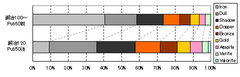

１．注文書の出方
スキルが70.0以上で受けられる注文は、以下の条件よりランダムに選択されます。- 大口か小口か
- 作成するもの
- 品質の指定
- 数量
- 要求する素材（鍛冶）
- Iron : 40（約40％）
- Dullcopper : 18（約18％）
- Shadow : 15（約15％）
- Copper : 9（約9％）
- Bronze : 6（約6％）
- Gold : 5（約5％）
- Agapite : 4（約4％）
- Verite : 2（約2％）
- Valorite : 1（約1％）
- 要求する素材（裁縫）
- Normal : 6（約37％）
- Spined : 6（約37％）
- Horned : 3（約19％）
- Barbed : 1（約6％）
大口1、小口11の比率で選択される。裁縫もほぼ同じ比率となっている。
小口 1/12, 大口 11/12
鍛冶では、大口は8種類の中から、小口は49種類（武器類25種＋防具類24種）の中から選択される。
裁縫では、大口は14種類の中から、小口は55種類（布製29種＋革製26種）の中から選択される。
Exceptional（高品質）, Normal（品質指定なし）のどちらか。スキルによりその比率が変化する。 また、鍛冶と裁縫ではその比率が異なり、
鍛冶はスキル100.0以上で、「高品質」：「品質指定なし」がほぼ1：1の比率となる（高品質 1/2, 指定なし 1/2）。
裁縫はスキル100.0以上で、「高品質」：「品質指定なし」がほぼ1：2の比率となる（高品質 1/3, 指定なし 2/3）。
10,15,20で等確率で選択される。3 ＠ 1/3
武器は素材指定なし（便宜上Ironのみ）、防具は指定なし（Iron）および特殊素材（Dullcopperなど）から選択される。
Publish50の変更後、防具の注文で出現する素材の比率は、鍛冶100の場合で下のようになっている。
よって、鍛冶100と比べて、鍛冶110では各特殊素材の出現率が 7/6倍、鍛冶120では 9/6倍となる。
裁縫も鍛冶と同じように布製は指定無し、革指定無し（Normal）および特殊革（Spinedなど）から選択される。
ただし、鍛冶とは異なり、スキル110以上でも特殊素材が選択される比率は上昇しない。
革製の注文で出現する素材の比率は、裁縫スキル100以上で下のようになっている。
| 大口/小口 | 使用素材 | 品質 | 数量(set) | ||||||
| 小口 | 3664 | 武器 | 1941 | Bronze | 128 | 指定なし | 2003 | 10 | 1342 |
| 大口 | 336 | Iron防具 | 832 | Golden | 99 | 高品質 | 1997 | 15 | 1325 |
| Dull | 372 | Agapite | 71 | 20 | 1333 | ||||
| Shadow | 306 | Verite | 63 | ||||||
| Copper | 187 | Valorite | 1 | ||||||
鍛冶バルクオーダーで受けた注文書の種類（Publish50導入後、スキル100）
| 大口/小口 | 使用素材 | 品質 | 数量(set) | ||||||
| 小口 | 1067 | 武器 | 540 | Bronze | 27 | 指定なし | 598 | 10 | 380 |
| 大口 | 83 | Iron防具 | 268 | Golden | 32 | 高品質 | 552 | 15 | 393 |
| Dull | 114 | Agapite | 22 | 20 | 377 | ||||
| Shadow | 80 | Verite | 12 | ||||||
| Copper | 49 | Valorite | 6 | ||||||
鍛冶バルクオーダーで受けた注文書の種類（Publish50導入後、スキル120で4000枚集計）
| 大口/小口 | 使用素材 | 品質 | 数量(set) | ||||||
| 小口 | 3662 | 武器 | 1968 | Bronze | 190 | 指定なし | 2008 | 10 | 1318 |
| 大口 | 338 | Iron防具 | 190 | Golden | 150 | 高品質 | 1992 | 15 | 1327 |
| Dull | 540 | Agapite | 133 | 20 | 1355 | ||||
| Shadow | 441 | Verite | 70 | ||||||
| Copper | 288 | Valorite | 30 | ||||||
防具系注文を抜き出し、旧仕様での注文の出方（自サイト調べ）と比較したグラフ。

裁縫バルクオーダーで受けた注文書の種類（裁縫スキル＝120）
| 大口/小口 | 使用素材 | 品質 | 数量(set) | ||||
| 小口 | 1201 | 布製 (Cloth) |
673 | 指定なし (標準) |
859 | 10 | 439 |
| 大口 | 99 | 皮製 (Normal) |
230 | 高品質 | 441 | 15 | 410 |
| Spined | 239 | 20 | 451 | ||||
| Horned | 119 | ||||||
| Barbed | 39 | ||||||
２．特定報酬対象の注文出現確率
鍛冶（小口のみ）
１．注文書の出方を参考に、NPCから依頼された注文が特定報酬（Power scroll 120〜）の小口となる確率を出してみました。表は鍛冶スキル100（GM）の場合で、スキル110（Elder）では7/6倍、スキル120（Legendary）では9/6倍の確率になります。
| 報酬 | 出現確率 |
 valorite runic hammer valorite runic hammer |
1/5345 (1.0) |
 verite runic hammer verite runic hammer |
1/1336 (4.0) |
| ancient hammer + 60 | 1/629 (8.5) |
 agapite runic hammer agapite runic hammer |
1/356 (15.0) |
| ancient hammer + 30 | 1/247 (21.7) |
 gold runic hammer gold runic hammer |
1/156 (34.1) |
 power scroll 120 power scroll 120 |
1/97 (54.8) |
( )はvalorite runic 対象小口の出現確率を1としたときの割合
３．バルクオーダーの難易度
大口、小口に関わらず、完成させた注文書をNPC鍛冶屋に渡すことで報酬品（gp＋アイテム＋名声）を獲得できますが、それらは注文の難易度によって決まっています。鍛冶、裁縫共に注文の難易度は、下表の4要素（大口、素材、品質、数量）の合計点で、点数ごとに報酬品が決まっています。
（１）鍛冶バルクオーダー、難易度点
| 大口 | 素材 | 品質 | 数量(set) | ||||
| Plate | 16 | 指定なし (Iron) |
0 | 指定なし (標準) |
0 | 10 | 0 |
| Chain | 12 | Dull | 8 | 高品質 | 8 | 15 | 1 |
| Ring | 8 | Shadow | 10 | 20 | 2 | ||
| Fencer | 14 | Copper | 12 | ||||
| Sword | 12 | Bronze | 14 | ||||
| Axe | 12 | Golden | 16 | ||||
| Mace | 12 | Agapite | 18 | ||||
| PoleArm | 8 | Verite | 20 | ||||
| Valorite | 22 | ||||||
（２）裁縫バルクオーダー、難易度点
| 大口 | 素材 | 品質 | 数量(set) | ||||
| 4パーツ | 12 | 布 普通皮 |
0 | 指定なし (標準) |
0 | 10 | 0 |
| 5パーツ | 16 | Spined | 2 | 高品質 | 4 | 15 | 1 |
| 6パーツ | 20 | Horned | 4 | 20 | 2 | ||
| Barbed | 6 | ||||||
４．名声の上昇
（１）基本名声値
基本名声値は、３．バルクオーダーの難易度で算出した点数によって決まっており、簡単な計算式があります。（基本名声値）＝｛難易度ポイント/2（端数切捨）｝2
鍛冶の場合は最高難易度の注文（Valorite,HQ*20のプレート大口）で576裁縫の場合は最高難易度の注文（Barbed,HQ*20で6パーツの大口）で256
となっています。
（２）スキルの影響
納品者のスキルが補正なしで100(GM)以上の場合、(1)で算出した基本名声値の100％が得られます。しかし、スキルが100未満の場合、(1)で算出した基本名声値がスキルに応じて減少し、スキルが0で基本名声値の50％となります。
（獲得名声値）＝（基本名声値）×（0.5＋専門スキル[補正なし、最大100]/200） [端数切捨]